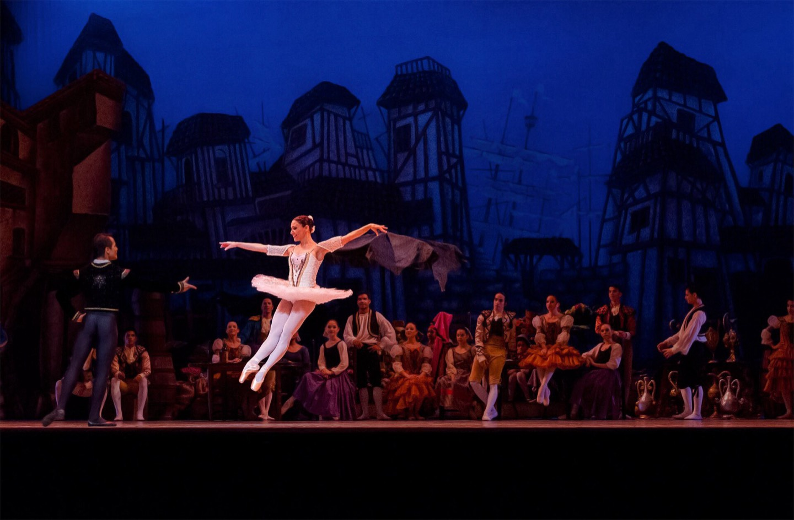
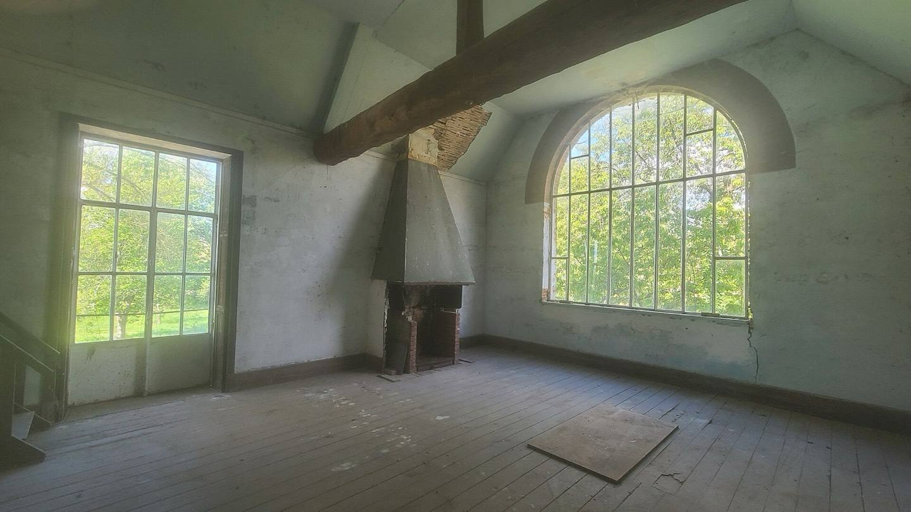
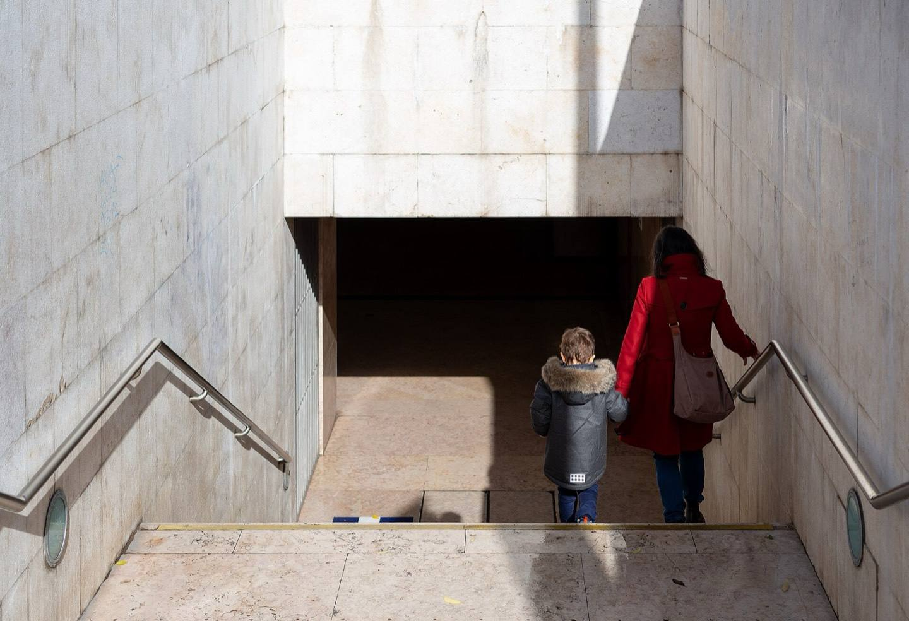

Sixty identities for cultural institutions.
Field Office is a brand identity studio of four, in Copenhagen.
Where an identity has to hold
One system, from the auditorium to the stacks.




A studio of four
Four people in Copenhagen.
- Identities shipped
- 60
- Working with
- Cultural institutions
- Write to
- Studio email to come

